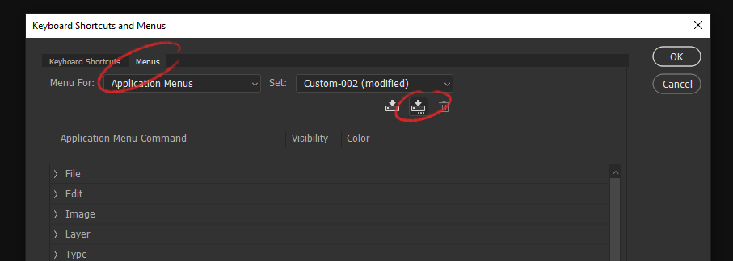

Adobe Photoshop
Photo Editing, Design, Digital Painting, Animation, Video Editing
Install Instructions
https://helpx.adobe.com/support/photoshop.html
Command Line Install
https://helpx.adobe.com/download-install/kb/creative-cloud-desktop-app-download.html
The direct downloads in the link above are recommended over the main download page or using chocolatey, as the binary is always signed by Adobe and can be handled programmatically with either bash or powershell:
# Latest macOS / Apple M1
curl -LfO 'https://ccmdl.adobe.com/AdobeProducts/KCCC/CCD/5_7_1/macarm64/ACCCx5_7_1_1.dmg'
# Latest Windows 10/11 x64
$ProgressPreference = "SilentlyContinue"
Invoke-WebRequest -Uri "https://ccmdl.adobe.com/AdobeProducts/KCCC/CCD/5_7_1/win64/ACCCx5_7_1_1.zip" -OutFile "C:\Windows\Temp\ACCC_latest.zip"
Expand-Archive -Path "C:\Windows\Temp\ACCC_latest.zip" -DestinationPath "C:\Your\Destination\Path"
& 'C:\Your\Destination\Path\Set-up.exe'
Better Keyboard Mappings
It's easy to forget [ and ] are the default brush size modifiers.
- For right handed users: change these to
aands - For left handed users: change these to
kandl
If you're right handed, remapping all of the keys around w, a, s, d makes a lot of sense, this is something computer games commonly do. You'll be able to access nearly all of the tools you'd need without needing to move your hand around the keyboard. This way you can keep drawing while switching tools intuitively.
If you're left handed you can do the same with i, j, k, l (though by default the [ + ] keys may feel natural). In this case you can move most of the key mappings over to the right side of the keyboard to achieve the same thing.
Creating Brushes
TO DO
- Goal of the brush
- Texture file
- Brush settings
- Exporting the brush to a file
Processing Files
Actions
- Start "recording" with the record button
- It will observe most of your actions in photoshop until you press the "stop" button
- Pressing "play" will execute that sequence of actions again
- Actions can be leveraged in batch processing
Line Art Techiques
Generate, and overlay line art above color / b&w:
Ctrl+jduplicate the color / b&w layerFilters > Filter Gallery > Sketch > Photocopy, Darkness: 8, Detail: 4- Layer blending mode =
Multiply - Layer opacity =
%

For diagrams or structural drawings it may help to have each section's line art in a single color.
- Create the image with each element that needs to be separate, as separate layers
Shift+Left Click, thenCtrl+gto group a series of line art layers- Do this for each series of line art layers that need to be 'together'
- For each group, create a new layer above filled with a single solid color
- Change the color layers to blending mode =
Color Alt+Left Clickbetween layers to adhere those color layers to the group folder itself- Mouse icon changes to something like
↵while holdingAlt
- Mouse icon changes to something like
- Change each group folder's blending mode to
Multiply
This allows the color to only apply to each group's line art layers while each group of line art layers are visible
To recap:
_Color Layer | Blending Mode: Color
|
Group 1
|_ Line Art | Blending Mode: Multiply
|_ Photo | Blending Mode: Normal
_Color Layer | Blending Mode: Color
|
Group 2
|_ Line Art | Blending Mode: Multiply
|_ Photo | Blending Mode: Normal
Sample image credits:
- https://unsplash.com/photos/LCJ9iOli-uE
- https://unsplash.com/photos/ttS--i2y9Bo
Scaling Images
Image > Image Size > Resample
https://en.wikipedia.org/wiki/Raster_graphics
| Option | Use Case |
|---|---|
Preserve Details 2.0 |
The best option for upscaling a raster, natural, (non vector-style) image |
Bicubic Smoother (enlargement) |
Use this option if your image is mainly vector-style, smooth illustration |
Bicubic Sharper (reduction) |
The default for downscaling large raster, natural (non vector) images |
Nearest Neighbor (hard edges) |
Pixel art, this will preserve the edges of each pixel while scaling |
Scaling Images In Batches
Starting with a folder of static images (png, jpg, etc)
File > Scripts > Load Files into Stack... > Browse- Navigate to the folder(s) with the files you wish to batch scale
- You can select a sequential group of files all at once by:
- Sorting files by
Typein the folder window Clicking on the first file in the series of files you want to selectShift+Clicking on the the furthest most file you want to select- All files in between those two points when using
Shift+Clickwill be selected - You can select / deselect additional files to those selected while
Ctrl+Clicking others - Navigating away from the window can / may deselect your files
- Sorting files by
- Click
Openin the UI once your selection is made- To add more files from other folders to this batch, simply repeat the same steps
- Click
OKonce you're ready to load them all into photoshop Image > Image Sizeto resize the entire document (effectively all of the layers with it)- Using the same
Click,Shift+Clickselect all of the layers Layer > Export As...then make any other adjustments before exporting.- You will need to strip the doubled file extension
- You'll note
*.jpgbecomes*.jpg.PNGor similar
- You'll note
Using bash:
for file in ./*\.*.jpg.PNG; do mv "$file" $(echo "$file" | sed 's/\.jpg\.PNG/\.PNG/g'); done
Using PowerShell:
Get-ChildItem *.jpg.PNG | Rename-Item -NewName { $_.Name -replace '.jpg.PNG','.PNG' }
Animation
You can create cel and sprite-based frame animation in photoshop from layers:
Window>Timeline>Create Frame Animation
[Timeline Menu]>Make Frames From Layers
- Adjust the timing of each frame in the
Timelineby clicking thevarrow next to the time value - Choose
Other...to enter a custom value
0.08second delay works well for most pixel art
-
Each frame can have different layers visible or hidden
- e.g. background always visible
-
The same
Shift+Left Clickshortcuts apply to these frames as they do with layersShift+Left Clickselect every frame, make the background visibleShift+Left Clickselect every frame, hide the character layers- Invidivdually make each character layer visible, one per frame
Example hiding / showing layer(s) across all frames:
The resulting GIF:
Exporting Sprite Layers to PNGs
This section includes Krita as part of the workflow. This is optional, however:
Photoshop>[Select/highlight all layers]>Layer>Export As...>PNG files-
Photoshop>Scripts>Load files into Stack...>Select PNG Files -
Krita>Render Animation>Images>PNG Files Krita>Import Animation Frames>Select PNG Files
Photoshop's Export As... function crops the PNGs down to the largest visible sprite.
Krita's Render Animation maintains the overall canvas pixel dimensions for each sprite.
Quality wise both exported PNG sprites are exactly the same.
Scripting
Scripting and automation features in Photoshop
TO DO
Backup / Restore Photoshop Preferences and Settings
This section explains exactly how to backup and restore specific settings to files that you can store safely on an external drive or in a cloud. This is good to know if for example adobe's cloud ever has an issue automagically syncing all of your hundreds of settings, you're not left wondering how to recover.
Preference and Settings File Locations
Backup Brushes
TO DO
Backup Keyboard Shortcuts
BACKUP: Edit > Keyboard Shortcuts... > 'Create a new set based on the current set of shortcuts'
NOTE: if you have multiple sets of keyboard shortcuts, choose the one you want to backup here:
This button's icon is just above the 'Accept' button on the top right, has the down arrow onto what looks like a computer hard drive, and three '...' underneath of it. It will save a .kys file.

RESTORE: Double-Click any .kys file.
Photoshop will automatically open it and apply the shortcuts to your current set.
You can then save this configuration (the other 'save' button in the Keyboard Shortcuts menu)
RESTORE: Alternatively you can do this with PowerShell or bash.
Photoshop will have your presets loaded into the menus next time you launch it:
# Windows
Copy-Item -Path .\your-keyboard-shortcuts.kys -Destination 'C:\Users\[user name]\AppData\Roaming\Adobe\Adobe Photoshop [version]\Adobe Photoshop [version] Settings\Keyboard Shortcuts\'
# macOS
cp ./your-keyboard-shortcuts.kys '/Users/[user name]/Library/Preferences/Adobe Photoshop [version] Settings/Keyboard Shortcuts/'
Backup Menus
BACKUP: Edit > Menus... > 'Create a new set based on the current set of shortcuts'
This is the same button / icon as we used to save the keyboard shortcuts, only here it's in the top middle of the window. It will save a .mnu file.

RESTORE: Double-Click any .mnu file.
Photoshop will automatically open it and apply the shortcuts to your current set.
RESTORE: Alternatively you can do this with PowerShell or bash.
Photoshop will have your presets loaded into the menus next time you launch it:
# Windows
Copy-Item -Path .\your-custom-menus.mnu -Destination 'C:\Users\[user name]\AppData\Roaming\Adobe\Adobe Photoshop [version]\Adobe Photoshop [version] Settings\Menu Customization\'
# macOS
cp ./your-custom-menus.mnu '/Users/[user name]/Library/Preferences/Adobe Photoshop [version] Settings/Menu Customization/'
Backup Workspaces
BACKUP: Copy the [workspace-name].psw file at:
C:\Users\[user name]\AppData\Roaming\Adobe\Adobe Photoshop [version]\Adobe Photoshop [version] Settings\WorkSpaces
RESTORE: Edit > Presets > Import / Export Presets... > Import Presets Tab > Select Import Folder
Choose the folder storing your backed up .psw files you'd like to restore from.
Double click the .psw file to move it to the right column.
Click Import Presets

RESTORE: Alternatively you can do this with PowerShell or bash.
Photoshop will have your presets loaded into the menus next time you launch it:
# Windows
Copy-Item -Path .\your-custom-workspace.psw -Destination 'C:\Users\[user name]\AppData\Roaming\Adobe\Adobe Photoshop [version]\Adobe Photoshop [version] Settings\WorkSpaces\'
# macOS
cp ./your-custom-workspace.psw '/Users/[user name]/Library/Preferences/Adobe Photoshop [version] Settings/WorkSpaces/'
Troubleshooting
Pressure Sensitivity on Windows 10
This bug was introduced around the time Windows Ink was new, the fix is kept here for historical reference.
Place the following text into a file named PSUserConfig.txt located at:
C:\Users/User/AppData/Roaming/Adobe/Adobe Photoshop CC 20xx/Adobe Photoshop CC 20xx Settings/PSUserConfig.txt
This will prevent the pressure sensativity bug from persisting on some older Windows 10 machines.
# Use WinTab
UseSystemStylus 0